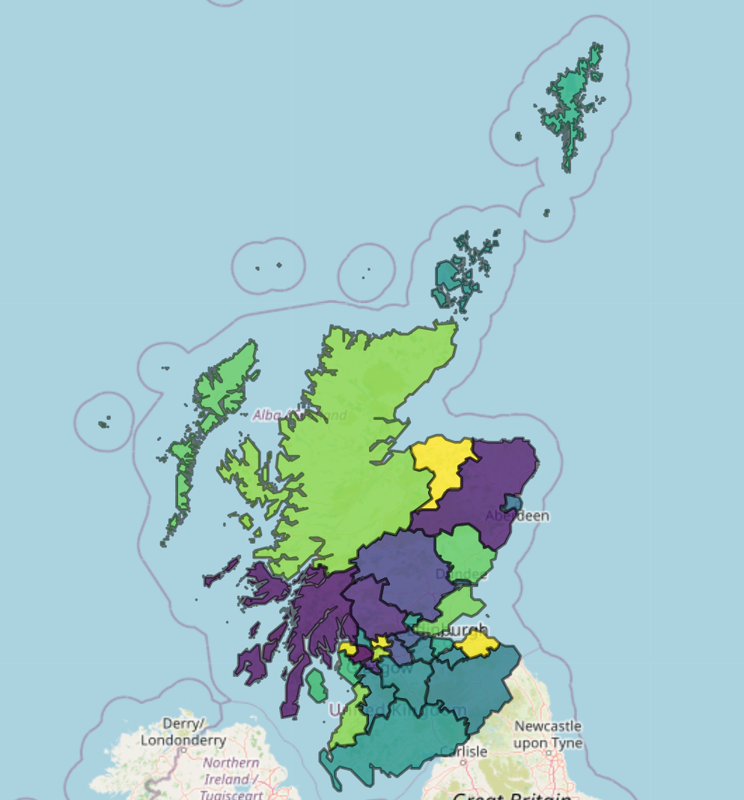

No feedback found for this session
Leaflet
R
intermediate
About this session
- this is an intermediate introduction to Leaflet in Shiny as a tool for building interactive maps
- you’ll need to be comfortable working in R Shiny to enjoy this session
Why leaflet?
- the easiest way of building interactive maps
- mainly intended for point maps, but can also produce filled maps (choropleths)
- can be included in Shiny apps, or in Quarto/Rmarkdown outputs
Getting started
- Open a new Rstudio project
- In the console, run
install.packages("pak") - Once installation has completed, create a new
temp.Rscript - Install packages, and create some simple data using:
We’ll start with some standalone maps, and move on to thinking about how to add our maps to Shiny towards the end of the session.
A first map
Like ggplot, we build leaflet maps in layers. Start with a tibble of data, attach the main leaflet() function with a pipe, then add a second layer by piping on addMarkers() - beware the camelCase:
dat |>
leaflet() |>
addMarkers()addMarkers() creates markers to correspond with our data. Usefully, it’ll interpret columns named lat(itude) and long(itude) as containing degrees of lat and long, so we’ve got a map of something here. But what’s not exactly clear.1 Let’s add an additional layer:
dat |>
leaflet() |>
addMarkers() |>
addTiles()It’s worth saying that, unlike ggplot, the order of layers in the code doesn’t determine the order of layers in the resulting visualisation - so your markers will still show up, even if we add tiles “over” them. That additional layer of addTiles() adds a background map for us, by default the OSM. That’s potentially change-able, using addProviderTiles():
dat |>
leaflet() |>
addMarkers() |>
addProviderTiles(providers$NASAGIBS.ViirsEarthAtNight2012)There’s a full list (and demo) of the different tiles at https://leaflet-extras.github.io/leaflet-providers/preview/index.html - those names get put after providers$.
Those map objects can be saved and recalled in the usual way:
base_map <- dat |>
leaflet() |>
addTiles() |>
setView(lng = -5, lat = 57, zoom = 7) # lets you control starting location and zoom
base_mapbase_map <- base_map |>
addMarkers(icon = list(iconUrl = "src/images/icon.png", iconWidth = 25, iconHeight = 25)) # adding markers with a custom icon
base_map # re-view updated mapbase_map |>
addProviderTiles(providers$NASAGIBS.ViirsEarthAtNight2012) # add to overwriteThe custom icon here is just a small .png file with a transparent background:
A more substantial map
Using this data set, we can build a map of Scotland’s hospitals:
Tooltips
Our data contains hospital names, as well as long and lat values:
hosp_dat[1:5,] |>
knitr::kable()| loc_name | loc | postcode | long | lat |
|---|---|---|---|---|
| University Hospital Ayr | A210H | KA6 6DX | -4.595538 | 55.43033 |
| University Hospital Crosshouse | A111H | KA2 0BE | -4.539389 | 55.61394 |
| Arran War Memorial Hospital | A101H | KA278LF | -5.115493 | 55.54312 |
| Davidson Cottage Hospital | A207H | KA269DS | -4.851071 | 55.24244 |
| Girvan Community Hospital | A216H | KA269HQ | -4.846975 | 55.24831 |
Add a hospital name to the marker using a ~ to refer to the column name:
hosp_base |>
addMarkers(label = ~loc_name)If our data had unfriendly lat and long columns, we could also specify those in a similar way:
hosp_dat |>
dplyr::rename(ad = long, ws = lat) |>
leaflet() |>
addTiles() |>
addMarkers(label = ~loc_name,
lng = ~ad,
lat = ~ws)Unlike ggplot, we don’t have the full data to play with in leaflet objects, so we’ve needed to remake this map from scratch.
Customising markers
We often want to indicate group membership using marker colours. We’ll start by joining some board info to the hospitals data:
Next, and a major pain-point if you’re used to dealing with ggplot doing it for you, join a tibble of hex colour values:
Then, build a similar map again, using a variant of addMarkers():
hosp_dat_board |>
dplyr::left_join(board_colours) |>
leaflet() |>
addTiles() |>
addCircleMarkers(label = ~loc_name,
stroke = T, # turns outline on and off
color = "#000", # outline colour
weight = 2, # outline thickness
fillColor = ~colours, # column to use for fill colours
fillOpacity = 0.8) # fill opacityIt’s also possible to scale those CircleMarkers. This uses some open data about hospital beds. This data is a bit fragmented, so we’ll remove the missing data and only show scaled blobs for about 30 sites in total here:
beds <- here::here("r_training/data/beds_site.csv") |>
readr::read_csv() |>
dplyr::filter(Quarter == "2025Q4") |>
dplyr::select(loc = Location, SpecialtyName, beds = AverageAvailableStaffedBeds) |>
dplyr::filter(!stringr::str_detect(loc, "S0")) |>
dplyr::filter(SpecialtyName == "All Specialties")
hosp_dat_boards_beds <- hosp_dat_board |>
dplyr::left_join(board_colours) |>
dplyr::left_join(beds) |>
dplyr::filter(!is.na(beds))
hosp_dat_boards_beds |>
leaflet() |>
addTiles() |>
addCircleMarkers(label = ~loc_name,
stroke = T, # turns outline on and off
color = "#000", # outline colour
weight = 2, # outline thickness
fillColor = ~colours, # column to use for fill colours
fillOpacity = 0.8,
radius = ~sqrt(beds))Again, a reminder that you can change the base tiles to change the mapping used. Here’s an example of topographical mapping, showing very dramatically that people tend not to build big hospitals up mountains:
hosp_dat_boards_beds |>
leaflet() |>
addCircleMarkers(label = ~loc_name,
stroke = T, # turns outline on and off
color = "#000", # outline colour
weight = 2, # outline thickness
fillColor = ~colours, # column to use for fill colours
fillOpacity = 0.8,
radius = ~sqrt(beds)) |>
addProviderTiles(providers$OpenTopoMap)There’s also addAwesomeMarkers which uses fontawesome icons. Define the icon first using awesomeIcons, and then apply:
icons <- awesomeIcons(
icon = 'building',
library = 'fa',
markerColor = "lightred",
iconColor = "#ffffff")
hosp_dat_board |>
dplyr::left_join(board_colours) |>
leaflet() |>
addTiles() |>
addAwesomeMarkers(label = ~loc_name,
icon = icons) # using our earlier definitionaddAwesomeMarkers is hard to colour with precision (or to fit series), as you can only use a group of a dozen or so basic colours for the markerColor aspect. That’s also a good time to demonstrate clustering:
hosp_dat_board |>
dplyr::left_join(board_colours) |>
leaflet() |>
addTiles() |>
addAwesomeMarkers(label = ~loc_name,
group = ~board,
clusterOptions = markerClusterOptions())Adding leaflet to Shiny
- data source at
https://nes-dew.github.io/KIND-training/r_training/data/hosp_dat_boards_beds.rds -
leafletOutputandrenderLeafletto output and render your leaflet map - using
sidebarLayoutwithsidebarPanelandmainPanelis highly recommended - leaflet otherwise defaults to a full-screen view- or
bslibhaspage_sidebarwhich is even nicer
- or
-
setViewis helpful if you want to constrain the zoom level of your map while filtering
Filled maps
These are possible if you have a TopoJSON or geoJSON shape file of the boundaries you’d like to fill. Fuller tutorial, and some demo code based on the Local Authority boundaries:
la <- "data/Local_Authority_Boundaries_-_Scotland.json" |>
sf::read_sf() |> # read the sf object to an sf
sf::st_transform(crs = "+proj=longlat +datum=WGS84") |> # transform the coordinates from Eastings to lat-long
dplyr::mutate(val = sample(100:200, 32, T)) # add a column of sample data for the fill
pal <- colorNumeric("viridis", NULL) # colour map using the viridis palette
la |> # plot the lot
leaflet() |>
addTiles() |>
addPolygons(weight = 2,
color = "#000",
fillColor = ~pal(val), # map the values to a colour
fillOpacity = 0.8)
Footnotes
If, like me, you struggle to remember which one is which, longitude is the East-West one. Earth is slightly wider than it is tall - an oblate spheroid, famously - so the longitude is slightly longer than the other one. Lots of interesting history about longitude too - it’s probably the most-studied bit of history of science of all.↩︎